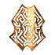

Корундовый ингибитор
Предметы / Ресурсы
Открыть в интерактивной вики →
| Вес | 3 |
|---|---|
| Цена | 6 платины |
Описание
Материя, позволяющая контролировать мощность во время улучшения снаряжения V - VI рангов.
| Средство для контроля силы при улучшении снаряжения ранга V–VI. |
Рецепт
Создание: 1x  Лапа медведя + 50k
Лапа медведя + 50k

Брошь Кадиры + 3xЛапа медведя + 50kГде создать

Стоимость
6  Платина
Платина
ПлатинаСпособы получения
|
Изготовление
Изготавливает Лукас Ландау в Поместье Ландау за 50 000 золота после доставки ингредиентов:
|